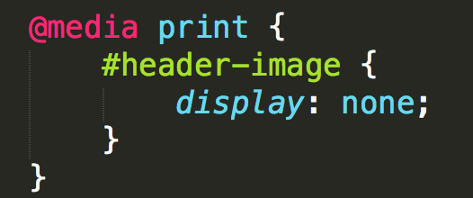
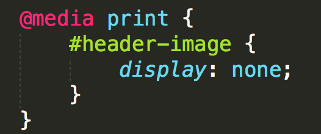
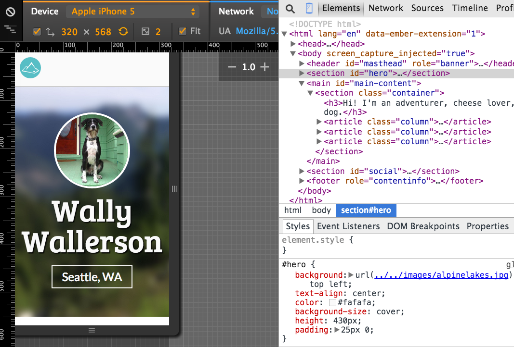
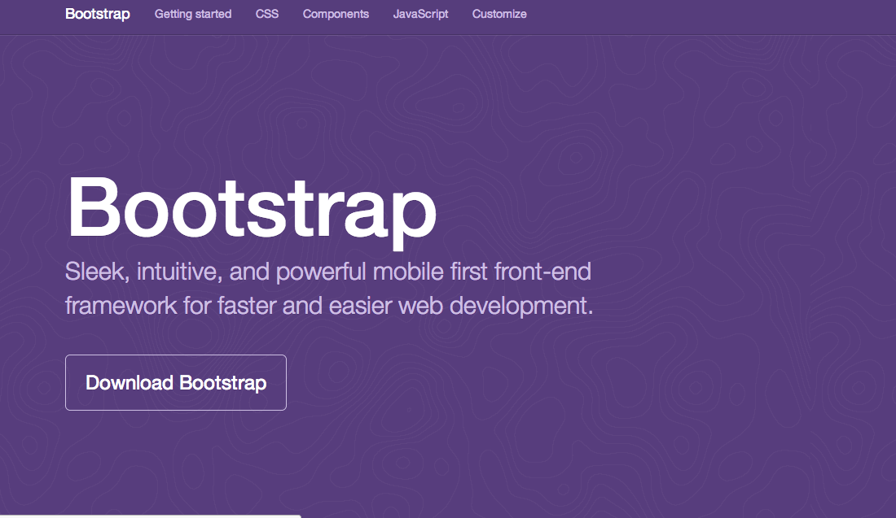
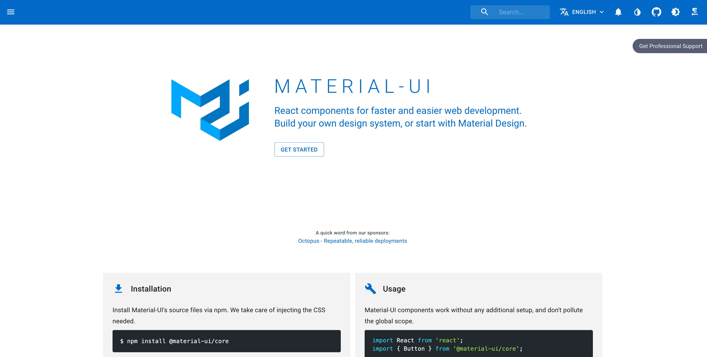

Responsive Web Design (RWD)
What is it!?
RWD is a design approach that suggests that the design & development of a site shoud respond to the user's behavior and environment.
Wait, people really care?
- 64% of American adults own a smartphone.
- Smartphone users check their phones 150x every day.
- Some smartphone owners — particularly younger adults, minorities and lower-income Americans — depend on their smartphone for internet access.
Why it's awesome
RWD modifies the presentation of a site, without modifying the content of the page. So no matter what, every user has access to the same information.

The Ingredients of RWD
- Fluid grids
- Flexible images
- Magical CSS Media Queries to make the magic happen
Fluid Grids
With fixed width sites we have to adjust the height and with of elements manually.
With fluid grids the height a width of elements is dependent upon the device resolution.
How they work
- First we define a maximum width for the container.
- Then we divide the content up into a set of columns, usually 12.
- Then we design elements with proportional widths and heights, instead of being stuck with specific pixel dimensions.
- Whenever the device width changes, the grids change in width to scale with the device.
Flexible images
Text scales easily on smaller devices, but images are a bit tricky.
Images will overflow their container elements if they're too big for them.
That's annoying.
Enter Max-width
By using max-width on images, they will only expand to the size of their parent.
If their parent has no width (which it probably does), it will just expand to the width of the viewport.
img {
max-width: 100%;
}
Media Queries
Media queries apply certain CSS in certain situations.
- Print Media
- iPhone
- iPad
- Even larger screens
- Grayscale
Include Media Queries Last
They will overwrite previous styles because they are last in the cascade.
#header-image
 

Standard MQs
For devices that have dimensions no smaller than 320px and are not larger than 480px
/* Smartphones (portrait and landscape) */
@media only screen and (min-device-width : 320px)
and (max-device-width : 600px) {
/* Styles */
}
iPad dimensions with the orientation in landscape.
/* iPads (landscape) */
@media only screen and (min-device-width : 768px)
and (max-device-width : 1024px) and (orientation : landscape) {
/* Styles */
}
How they work
Rather than looking for a type of device, they look at the capability of the device. You can use them to check for all sorts of things.
- Width & Height (of the viewport)
- Device height & width
- Orientation - is the device in landscape or portrait mode.
- Resolution - Retina or normal.
Mobile First
By designing sites with mobile first in mind, it makes scaling them down a lot easier.
Mobile first allows us to simplify the userflow to it's basic elements and then enhance it as the screen size increases.
iPhone

Tablet

Desktop

Viewport Meta
Use this to control the size of the viewport on touch devices.
<meta name="viewport" content="width=device-width,
user-scalable=true">
width=device-width makes the viewport the size of the device.
user-scalable=true allows the user to pinch and zoom on your site.
Chrome Device Emulator
Let's develop it!
Let's take a look at our site now on a smartphone (you can resize your browser), and find ways to improve it.
Add the viewport meta tag to the html
Use media queries to shift elements around on the page and to increase legibilty
Responsive frameworks
Download a pre-built framework that has basic styles already set up.
- Fluid Grids
- Flexible Images
- Responsive media queries
- Styles for buttons and forms, because they're a pain!
- Lots of base styles like .pull-right, .btn, etc.
Twitter's Bootstrap
By far the most popular front-end framework out there.
Material UI
Another very popular framework for react - most used at work right now
What they include:
What are the cons?
- Default styles are…default and not very exciting
- Requires a fair amount of customization to make a unique looking site
- The documentation is daunting and can be very indimidating
- Remembering all the class names can be overwhelming